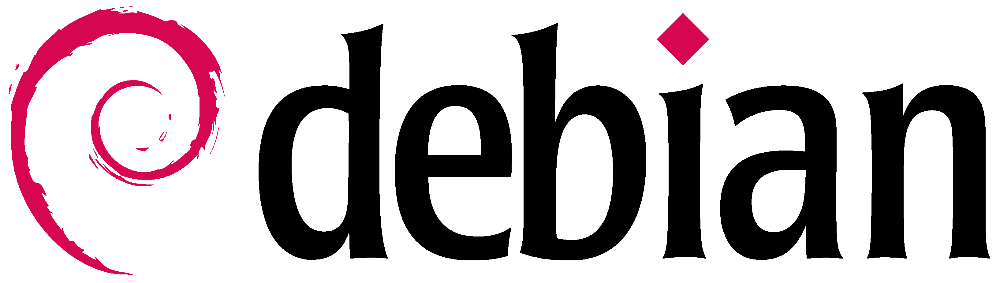

Debian
Description
Ce projet académique porte sur l’installation et la configuration complète d’un poste de travail dédié au développement informatique. L’objectif principal était de nous familiariser avec les différentes étapes nécessaires à la mise en place d’un environnement de travail fonctionnel, stable et adapté aux besoins des développeurs. Dans le cadre de ce projet, nous avons procédé à l’installation du système d’exploitation Debian (versions 12 et 13). Cette étape comprenait la préparation du support d’installation, le partitionnement du disque, la configuration du système, ainsi que les mises à jour essentielles après installation. Cela nous a permis de comprendre le fonctionnement d’un système GNU/Linux et les bases de son administration. Une fois le système installé, nous avons mis en place des environnements de développement intégrés (IDE), notamment Apache NetBeans et IntelliJ IDEA. L’installation et la configuration de ces outils nous ont permis d’explorer leurs fonctionnalités.
Organisation
Dans un premier temps, j'ai éffectuée une phase de préparation. Elle consistait à analyser les besoins techniques, à concevoir un schéma de la réalisation et à identifier les environnements de développement à installer, notamment Apache NetBeans et IntelliJ IDEA. Puis je suis passée à des travaux pratiques pour apprendre à manipuler les installations. Enfin je me suis mise sur une machine virtuelle où nous avons fait toutes nos installations.
Compétences acquises
Comme le projet a été réalisée de manière individuelle, il m'a permis de développer mon autonomie, ma rigueur et ma capacité à planifier les différentes étapes du travail. De plus il m'a appris à chercher et à avoir des bases solides par moi-même. J'ai pu mettre en pratique mon esprit méthodique et mon assidutée.
Conclusion
En conclusion, ce projet d’installation m’a permis de comprendre concrètement les différentes étapes nécessaires à la mise en place d’un environnement de travail fonctionnel. L’installation de Debian ainsi que la configuration des IDE comme Apache NetBeans et IntelliJ IDEA ont renforcé mes compétences techniques et mon autonomie. Cette expérience constitue une base solide pour mes futurs projets académiques et professionnels dans le domaine du développement informatique.